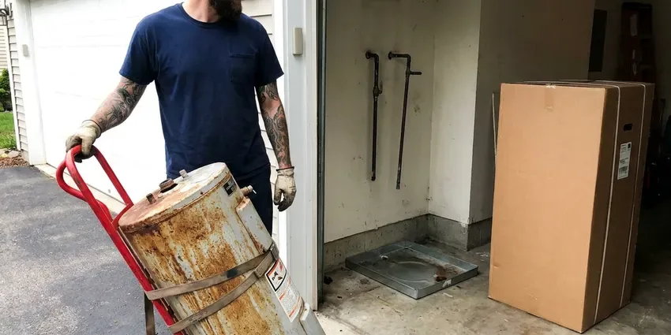
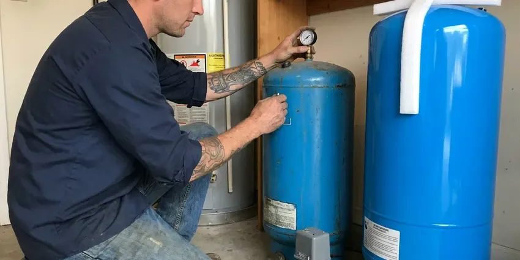

Water Line Replacement in Brattleboro, VT
Meter to house, one clean run of new pipe. CKV Plumbing handles water line replacement in Brattleboro, VT.
- Vermont Licensed Plumbers
- Flat Pricing
- Prompt Scheduling
- PEX or Type K Copper

Full Pressure and a Dry Yard in Brattleboro, VT.
You get a quote only after we confirm where the leak is.
Licensed Main Line Replacement in Brattleboro, VT
CKV Plumbing replaces the line, not just the leak. Two holes, one at the meter and one at the foundation. New pipe goes in as one continuous piece where possible, which means no buried couplings left to fail later, and we finish with a pressure test plus a check of each faucet.
Our expertise includes:
- Pressure reducing valve and main shutoff replacement
- Tracer wire and foundation sleeves on new lines
- HDPE pipe for directional bores

Additional Plumbing Replacement Services in Brattleboro, VT
When repairs are no longer enough, our replacement services in Brattleboro, VT deliver modern, efficient equipment installed right.


Brattleboro water heater replacement specialists


Customers
Why Choose CKV Plumbing for Water Line Replacement in Brattleboro, VT?
Fittings are where buried lines fail. That is why we run one continuous length of pipe from meter to house whenever the distance allows it, keeping every connection where you can reach it. Fewer joints in the dirt, fewer calls.
- Less Digging, Trenchless pulls pass beneath concrete and roots when the ground allows it.
- Code Work, We pull the permit and build the line to Vermont plumbing code, including depth and backflow rules.
- Leak Found First, We pin down the leak with a meter test and acoustic gear before anyone picks up a shovel.
Citywide Coverage
We replace service lines in every part of Brattleboro, from tight lots where the meter is ten feet from the porch to rural properties with a run of a few hundred feet. A long run and a short run get planned differently. We can often do short runs this week.
Experienced Team
Our plumbers have dug through clay, caliche, rock and sand. Each one behaves differently in a trench. That experience shows up in the little things, like knowing when to shore a trench and how much bedding to put under the pipe so it does not get pinched later.
Safety-First Approach
We protect the house as much as the yard. Floors get covered where we walk in. Inside work on the shutoff or regulator is done with the water off and the lines drained, keeping water off your floor. Boots stay clean.
Trusted Certified Brattleboro Plumbing Services Professionals
At CKV Plumbing, we take pride in licensed, certified plumbing services throughout Brattleboro, VT. Those papers on the wall mean something. Every repair, install and maintenance visit follows strict safety and quality rules, and the plumbers doing the work carry recognized industry credentials.
Call Us Now PHCC Plumbing Contractor Recognition
PHCC Plumbing Contractor Recognition Better Business Bureau (BBB) Accreditation
Better Business Bureau (BBB) Accreditation Angi Certified Pro
Angi Certified Pro ISO 9001 Quality Management Certification
ISO 9001 Quality Management CertificationWater Line Replacement Services in Brattleboro, VT
Pipe Bursting and Pulling in Brattleboro, VT
Bursting fits old cast iron or galvanized lines that will shatter under the head. Copper and poly are better pulled than burst. Either way the new pipe follows the old path, which matters when the route runs under a patio or a neighbor's fence, leaving you with two small holes instead of a long trench. Rock can stop it.

Pressure Regulator and Shutoff Upgrades in Brattleboro, VT
Street pressure varies a lot from one neighborhood to the next. Code says no more than 80 psi inside the house. If your new line comes in above that, we add a pressure reducing valve right after the main shutoff, set it around 55 to 65 psi, and replace the gate valve with a quarter-turn ball valve. A quarter turn and the water is off.
Water Line Materials We Install in Brattleboro, VT
Our trucks carry Type K copper, PEX-a and HDPE. Each one fits a different job. Copper suits short runs and high pressure, PEX handles long runs with bends, and HDPE is the usual pick for pipe pulling and directional boring, where we need a tough, fused pipe that can be dragged a long way. All of it is listed for drinking water, carrying the NSF 61 listing.
Galvanized Main Line Replacement in Brattleboro
Galvanized steel was common in homes built before the 1960s. Inside, the pipe rusts once the zinc is gone. After a few decades the opening can be half its original size, and that shows up as weak pressure and orange water, and no amount of cleaning brings it back. It has to come out.
Main Water Line Repair vs. Replacement in Brattleboro
One leak on a twenty-year-old copper line? We will usually just fix that spot. Three leaks on a galvanized line from the 1950s is different, because the pipe is thin everywhere and the next leak is already forming, so replacing the whole run is cheaper over five years. We tell you which camp you are in and show you the pipe we cut out.
Commercial Water Service Replacement in Brattleboro
Strip centers, churches and small apartment buildings each come with their own wrinkles. Some have a shared meter feeding several units. We map where each branch goes before cutting anything, bring the utility in for the meter side, and handle the permit, backflow test and inspection so the owner gets one point of contact. Paperwork included.
PEX Water Line Replacement in Brattleboro
PEX costs less than copper and goes in faster, which matters on a long run. Scale and corrosion are not a problem with it. We use PEX-a or PEX rated for direct burial, connect it with brass or poly fittings that are approved underground, and lay tracer wire on top so a locator can find it later, since plastic pipe does not show up on a metal detector. Cheap insurance.

Commercial Water Line Replacement in Brattleboro
Larger buildings bring larger pipe, deeper trenches and more inspection steps. We handle the backflow test and certification paperwork. Trench shoring comes into play below five feet, and we plan the work so the building is without water for hours, not days, often running a temporary supply while the new line is tied in. Night work is possible.
Water Line Replacement Near Brattleboro, VT
A plumber who is close can come back. That matters when the inspector needs to see an open trench. We schedule around the inspection window in Brattleboro, VT, keep the hole covered and marked overnight, and fill it as soon as it passes.
Being local means we know how service lines in Brattleboro are usually laid out. Older lots tend to have lines that wander. That helps us price trenchless work honestly, guess the depth of the old pipe before we dig, while planning around big roots. Short drive, long memory.
CKV Plumbing at a Glance
- Licensed and insured plumbers serving Brattleboro, VT
- 24/7 emergency service with same-day scheduling
- Upfront, flat-rate pricing before work begins
- 4.8-star rated by 553+ Vermont customers
Brattleboro Map
Brattleboro Information
- Population
- 7,352
- Area codes
- Local
- Service area
- Brattleboro and towns within a 40 mile drive
- Nearby
- Bennington, Rutland, Middlebury, Barre
Rocky ground, settling soil and old steel service pipe are why plenty of service lines in Brattleboro, VT need replacing after a few decades.
Talk to a Plumber
Call CKV Plumbing for reliable plumbing work done by licensed pros in Brattleboro, VT.
Our Specialized Plumbing Services in Brattleboro, VT
At CKV Plumbing, you get every kind of plumbing service from one company across Brattleboro, VT. From leak detection to full system installs, our team works fast and charges fair prices on homes and commercial properties alike. Here are the core services we offer:


Our Water Line Replacement Process in Brattleboro, VT
Here is how it works when we replace your main water line.
Free Estimate
Call CKV Plumbing at (802) 209-5139. You get a written quote after we see the meter and the house end.
Choose the Method
Trench or trenchless, we explain both and recommend one. Trees, concrete and run length decide it.
Prep the Site
Utilities get marked, the permit is pulled, and we lay down plywood or mats so machines do not rut the grass.
Frequently Asked Questions About Water Line Replacement in Brattleboro
Most homes run $2,500 to $6,500. Long runs, rock or trenchless work can push it to $7,000 to $12,000.
Both commonly reach 50 years. Copper has been buried much longer, so there is more history to go on. PEX is newer but does not corrode, and the main things that kill it are UV light before burial and sharp rock, which a good crew prevents. Bedding counts.
Some homeowners try. It usually goes wrong at the utility marks or the inspection. You need 811 locates, a permit, the right depth, proper bedding and fittings rated for burial, plus a way to get the trench past an inspector, and one bad fitting can mean digging it all up again.
For a few hours, usually. We dig first and shut the water off last. The shutdown comes when we tie the new line in at the meter and the house, and that part takes a few hours. Overnight outages are rare.
Most Vermont homes have full basements, many with fieldstone or older foundations that can let in water during wet seasons. Shifting ground pulls on fittings. Roots go after the moisture around a weeping joint, and sharp rock rubs through pipe that was buried without proper bedding, which is why we pad every new line with clean fill. That bedding matters more than the pipe brand.
Yes, almost always. An inspector usually checks the pipe before backfill. They check depth, material, bedding and the connection at the house, and we handle the application, the paperwork and the inspection date so you do not have to call the office yourself.
In most places the utility owns the main in the street and the line up to the meter. Everything on your side of the meter is yours. Some cities draw the line at the curb stop instead, so we check with the local provider before we start. That decides who pays.
Less than you might think. Trenchless jobs leave two small holes. Open trench jobs leave a strip about a foot wide that we backfill, compact and cover with the original sod or new seed, and most homeowners cannot find it after a month.
Hear From Customers Who Hired Our Plumbing Experts

Marcus H.
Grease from the fryer line kept clogging the kitchen drain at my diner. CKV Plumbing hydro jetted the line after closing, showed me the buildup on camera, and set us up on a quarterly cleaning so it does not catch us on a Friday again.
Drain Cleaning · Rutland, VT
Greg S.
I manage a small strip center with six tenants. CKV Plumbing handles our annual backflow testing and fixed a recurring clog in the shared sewer line that had been backing into the nail salon. Their reports come in clean and on time.
Commercial Plumbing · Montpelier, VT
Karen W.
After our third pinhole leak in copper, we stopped patching. CKV Plumbing gave us a written plan room by room and repiped the house in PEX while we stayed in it. The crew covered our floors every morning and cleaned up every night.
Repiping · Montpelier, VT
Emily R.
The shutoff valve under our kitchen sink snapped off in my hand on a Sunday morning. CKV Plumbing had someone out by early afternoon. He replaced both angle stops with quarter turn valves and showed me where our main shutoff was, which I honestly did not know.
Plumbing Repair · Brattleboro, VTDiane F.
My kitchen faucet had dripped for months and I finally got tired of hearing it at night. CKV Plumbing came out the next morning, replaced the cartridge and the O rings, and tightened a loose base that was letting water under the sink.
Faucet Repair · Middlebury, VT
Sofia M.
Two new toilets went in during one visit. The tech set them on new wax rings and swapped the old supply lines. He also noticed our bathroom faucet dripping and replaced the cartridge while he was there. No mess left behind.
Toilet Installation · Barre, VT